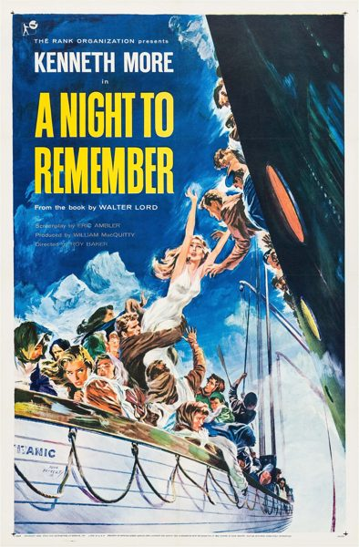

A Night to Remember
Studio: The Rank Organisation
Starring: Kenneth More, Ronald Allen, Robert Ayres
Director: Roy Ward Baker
Writer: Eric Ambler, Joseph Boxhall, Walter Lord
Producer: William MacQuitty
A Night to Remember is a 1958 British historical disaster film, directed by Roy Ward Baker. It is adapted from the 1955 book by Walter Lord, about the sinking of the RMS Titanic on 15 April 1912, after it struck an iceberg on her maiden voyage. Written by Eric Ambler, the film depicts the events of the night in a documentary style in considerable detail.
Trivia
- Based on A Night to Remember (book by Walter Lord).
- The film is based on Walter Lord's book A Night to Remember (1955).
- In Ray Johnson's documentary The Making of 'A Night to Remember' (1993), Lord says that when he wrote his book, there was no mass interest in the Titanic, and he was the first writer in four decades to attempt a grand history of the disaster, synthesising written sources and survivors' first-hand accounts.
- Lord dated the genesis of his interest in the subject to childhood as did producer MacQuitty, who had vivid memories of, as a boy of six, watching the launch of the Titanic at the Harland and Wolff shipyard in Belfast on 31 May 1911 and seeing it depart on its maiden voyage the following April.
Filming Locations
- Pinewood Studios
Previous Showings
3 Runs • 1 Festival
Original Billings: 2 runs (January 28, 1943 - June 7, 1959)
Original Run: January 28, 1943 (Thursday - Saturday)
All runs on record (3):
- January 28, 1943 (Thursday - Saturday)Loretta Young, Brian Aherne
- June 7, 1959 (Sunday - Thursday)Kenneth More
- March 11 - 12, 2017British and Lubitschw/ The Clouded Yellow